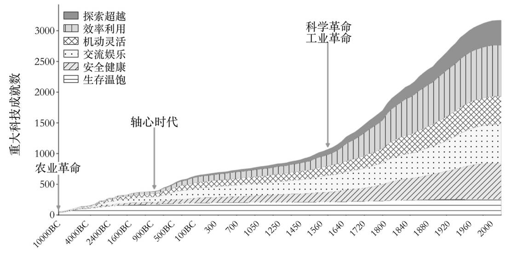
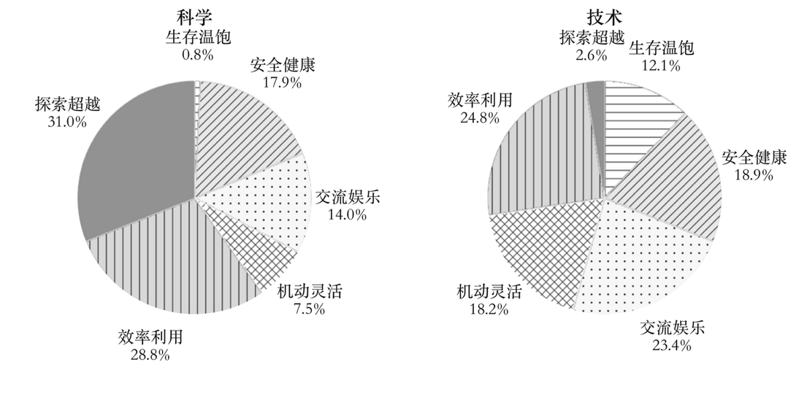
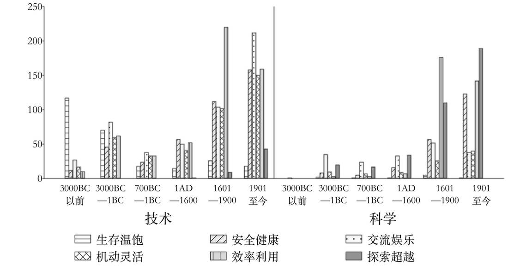

过去一万多年，科技前沿怎样演进，又呈现出怎样的长期趋势？
数据库所收录的重大成就，为观察科技前沿的长期变化提供了一组线索。沿着时间排列，再按需求分类，可以看见创新重点怎样转移，以及不同类别如何相互支撑。
图I-4显示了过去一万多年科技成就的累计趋势。增长较快的几个时段，与农业革命、古代文明与轴心时代的发展，以及近代科学革命和工业革命大致相连。累计曲线描绘了数据库中的积累节奏，其细部也受到史料保存与收录规则影响。
图I-4 重大科技成就的长期累计趋势。

数据来源：“重大科技成就数据库”。
为便于比较，我们参考历史分期并结合各类成果的分布，划出若干观察时段。某类成果占比达到约30%或以上时，以该类需求命名；没有一类明显占优时，称为“转折时代”。这些名称概括数据库中的相对重心。
图I-5 各历史时期六类科技成就的占比。
数据来源：“重大科技成就数据库”。
图I-5展示了生存、交流、转折和效率四个大时段的分类结构，其中效率时代分为1601—1900年与1901年以来两个阶段。
生存时代：公元前3000年以前，超过60%的条目属于生存与温饱。从旧石器时代的工具，到农业革命中的动植物驯化，再到适应定居生活的陶器和纺织，人们不断拓展获取生活资料的能力。
交流时代：公元前3000年至公元前1年，交流与娱乐类条目约占30%。文字、计数与数学在多个文明中发展，记录、计算和传播知识的能力增强。这个时段也包含轴心时代，各地思想与知识传统逐渐形成深远影响。
转折时代：公元1年至1600年，各类成果分布较为均衡。交流与娱乐仍占约26%，生存与温饱约占5%，其他类别在不同地区持续积累。
效率时代：1601年以来，效率与利用类条目在较长时段中占据突出位置。科学研究、机器生产与能源开发相互推动，生产能力大幅提高，人口、寿命和人均财富也经历了显著变化。
1601年至1900年，效率与利用类占比接近40%；1901年以来降至30%以下，健康、交流与探索等类别的占比有所上升。信息技术的迅速发展，还通过对生产、医疗、交通和科研的渗透，扩大了各类创新的空间。
数据库还区分科学与技术：前者侧重对自然现象与规律的系统研究，后者侧重运用知识解决问题的工具、方法和产品。两者联系紧密，这一分类可与需求分类交叉观察。归类时，我们把数学成果计入科学，把显微镜、望远镜等研究仪器计入技术。边界的处理影响统计，图表均沿用同一规则。
按此口径，数据库含科学条目1138项、技术条目2032项。图I-6比较了两者在六类需求中的分布。
技术条目更多集中于效率与利用；探索与超越类技术主要是研究仪器。科学条目中，探索与超越约占31%，效率与利用约占29%。科学知识可能同时支持多个领域，其应用价值常经由后续技术与产品逐步展开。
图I-6 科学与技术条目在六类需求中的分布，左图为科学，右图为技术。

数据来源：“重大科技成就数据库”。
图I-7 各历史时期科学与技术条目的需求分类。

数据来源：“重大科技成就数据库”。
图I-7进一步按历史时段比较科学与技术。在古代交流活动与近代效率提升较为突出的时期，两者的发展重点有较多重合。二战以后，技术条目较多集中于通信、计算机和互联网，科学研究则在探索、效率与健康等领域展开。它们各有节奏，也不断交换问题、方法与工具。
本文选自《欲望的力量：人类科技创新简史》（第二版）开篇“欲望与创新”——万年科技前沿：科技前沿演进的万年趋势。上一篇：科技六类价值：从需求看科技的六类价值；下一篇：三次科技革命：人类的三次科技大革命；连载总索引见《欲望的力量》连载总索引。
本编其他连载：需求创新动力学：人类需求与科技创新的动力 · 科技六类价值：从需求看科技的六类价值 · 三次科技革命：人类的三次科技大革命 · 人口与科技创新：人口规模与科技创新